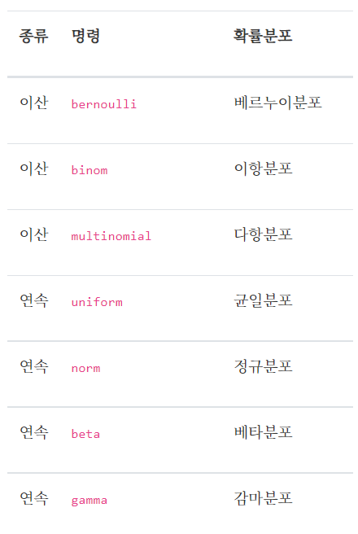
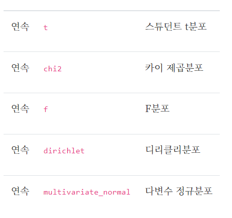
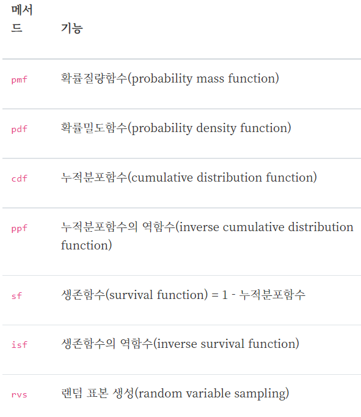
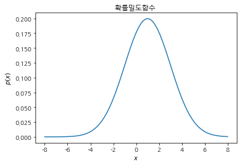
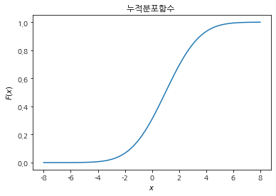
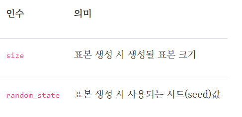
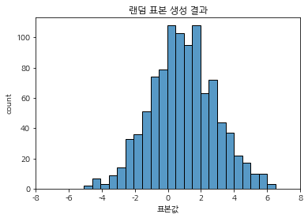

사이파이를 이용한 확률분포 분석
사이파이를 이용한 확률분포 분석
사이파이(SciPy)는 수치해석기능을 제공하는 파이썬 패키지다. 여러 서브패키지로 구성되어 있는데 그중 stats 서브패키지는 확률분포 분석을 위한 다양한 기능을 제공한다. 다음 코드로 임포트한다.
import scipy as sp
import scipy.stats
확률분포 클래스
사이파이에서 확률분포 기능을 사용하려면 우선 해당 확률분포에 대한 확률분포 클래스 객체를 생성한 후에 이 객체의 메서드를 호출해야 한다.
확률분포 객체를 생성하는 명령에는 다음과 같은 것들이 있다.
from IPython.display import Image # 주피터 노트북에 이미지 삽입
Image("C://Users/MyCom/jupyter-tutorial/수업자료/응용/data/20211009_035431_1.png")

Image("C://Users/MyCom/jupyter-tutorial/수업자료/응용/data/20211009_035431_2.png")

이 명령들은 모두 stats 서브패키지에 포함되어 있다. 예를 들어 정규분포 객체는 다음과 같이 생성한다.
rv = sp.stats.norm()
모수 지정
확률분포 객체를 생성할 때는 분포의 형상을 구체적으로 지정하는 모수(parameter)를 인수로 주어야 한다. 각 확률분포마다 설정할 모수가 다르므로 자세한 설명은 사이파이 문서를 참조한다. 하지만 대부분 다음과 같은 모수를 공통적으로 가진다.
loc
일반적으로 분포의 기댓값
scale
일반적으로 분포의 표준편차
예를 들어 기댓값이 1이고 표준 편차가 2인 정규분포 객체는 다음과 같이 생성한다.
rv = sp.stats.norm(loc=1, scale=2)
확률분포 메서드
확률분포 객체가 가지는 메서드는 다음과 같다.
Image("C://Users/MyCom/jupyter-tutorial/수업자료/응용/data/20211009_040306_1.png")

각 메서드 사용법은 다음과 같다.
확률밀도함수
pdf 메서드는 연속확률변수의 확률밀도함수의 역할을 한다. 표본 값을 입력하면 해당 표본 값에 대한 확률밀도를 출력한다.
linspace() 함수는 파이썬의 numpy 모듈에 포함된 함수로서 1차원 배열 만들기에 사용할 수 있는 함수이다.
x=np.linspace(start,stop,num)
start는 배열의 시작값, stop은 배열의 끝값이고, num은 start와 stop 사이를 몇개의 일정한 간격으로 요소를 만들 것인지를 나타내는 것이다. 만일 num을 생략하면 디폴트로 50개의 수열,1차원 배열을 만들어줍니다.
ex) x=np.linspace(0,10,11)
print(x)
결과값
[0,1,2,3,4,5,6,7,8,9,10]
참고 https://m.blog.naver.com/choi_s_h/221730568009
# matplotlib 한글 폰트 출력코드
# 출처 : 데이터공방( https://kiddwannabe.blog.me)
import matplotlib.pyplot as plt
from matplotlib import font_manager, rc
import platform
try :
if platform.system() == 'Windows':
# 윈도우인 경우
font_name = font_manager.FontProperties(fname="C://Users/MyCom/jupyter-tutorial/수업자료/응용/data/NanumGothic.ttf").get_name()
rc('font', family=font_name)
else:
# Mac 인 경우
rc('font', family='AppleGothic')
except :
pass
matplotlib.rcParams['axes.unicode_minus'] = False
xx = np.linspace(-8, 8, 100)
pdf = rv.pdf(xx)
plt.plot(xx, pdf)
plt.title("확률밀도함수 ")
plt.xlabel("$x$")
plt.ylabel("$p(x)$")
plt.show()

누적분포함수
cdf 메서드는 이산확률변수와 연속확률변수의 누적분포함수의 역할을 한다. 표본 값을 입력하면 해당 표본 값에 대한 누적확률을 출력한다.
xx = np.linspace(-8, 8, 100)
cdf = rv.cdf(xx)
plt.plot(xx, cdf)
plt.title("누적분포함수 ")
plt.xlabel("$x$")
plt.ylabel("$F(x)$")
plt.show()

무작위 표본 생성
무작위로 표본을 만들 때는 rvs(random value sampling) 메서드를 사용한다. 이 메서드에서 받는 인수는 다음과 같다.
Image("C://Users/MyCom/jupyter-tutorial/수업자료/응용/data/20211009_043605_1.png")

rv.rvs(size=(3, 5), random_state=0)
array([[ 4.52810469, 1.80031442, 2.95747597, 5.4817864 , 4.73511598],
[-0.95455576, 2.90017684, 0.69728558, 0.7935623 , 1.821197 ],
[ 1.28808714, 3.90854701, 2.52207545, 1.24335003, 1.88772647]])
import seaborn as sns
sns.histplot(rv.rvs(size=1000, random_state=0))
plt.title("랜덤 표본 생성 결과")
plt.xlabel("표본값")
plt.ylabel("count")
plt.xlim(-8, 8)
plt.show()
